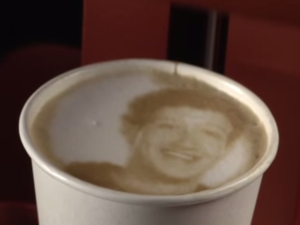

Looking Hot! Gadget Puts Your Face On A Coffee
Images can be printed in just 10 seconds, using coffee extract stored in so-called Ripple Pods.
A 3D printing-inspired machine that can create any image on the foam of a cup of coffee has been unveiled.
The Ripple Maker combines inkjet and 3D printing mechanics to replicate any image onto your frothy beverage
The image can be printed in just 10 seconds, using coffee extract stored in so-called Ripple Pods.
Customers can download an app to send their own photos to the machine, which will then recreate it on top of the drink.
<p> With a price tag of $999 (£634), it might seem pricey. But for a gadget that will see a coffee shop's products rapidly snapped and posted to Instagram, it could prove to be a good publicity opportunity. </p>As well as the up-front cost, there is also a $75 (£47) monthly subscription fee.